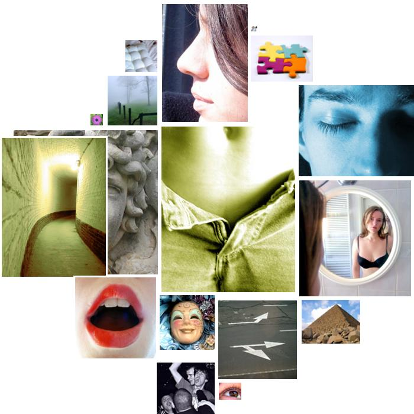

ron_reagan.txt
  sex
sex womb
 sadness
sadness tragedy, suffering, paint, pain, suffer, suffer
 unknown
unknown incredible, magic, magic
 narcissism
narcissism hand, bodies, skin, arm, brain, body, toes, brain, toes, blood, face
 consciousness_alteration
consciousness_alteration imagine, sleep, coma, imagine
 odor
odor breathing
 orality
orality mouthful, egg, thirst
 random_movement
random_movement spinal, spinal
 chaos
chaos chance
 positive_affect
positive_affect relieve, grinding
 abstraction
abstraction may, topic, research, may, may, know, research, probably, thinking, science, theoretically, basic, research, themselves, belief, distinctions, theoretically, different, circumstances, themselves, thoughts, surely, distinguish, know, learned, understands, knew, history, knowledge, choice, choose, reason, true, research
 timelessness
timelessness lifetime
 diffusion
diffusion indefinitely
 restraint
restraint must, prescribing, interfering, must, prevail, compelled, must
 soft
soft gentlemen
 vision
vision see, paint, picture, imagine, bright, imagine, see
 general_sensation
general_sensation stimulation
 temporal_references
temporal_references tonight, every, year, every, now, already, when, while, years, now, now, then, then, now, now, hours, every, now, when, years, now, often, months, past, moment, time